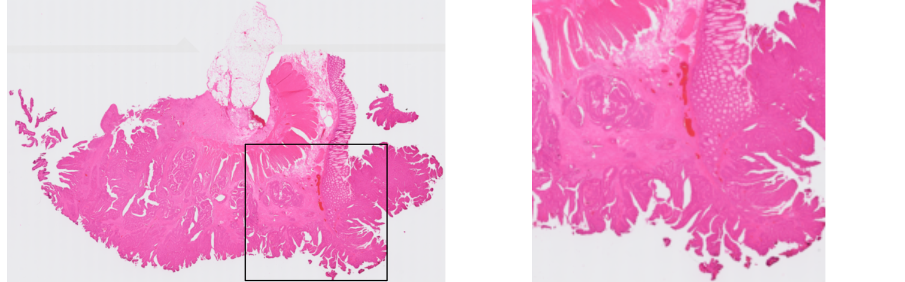
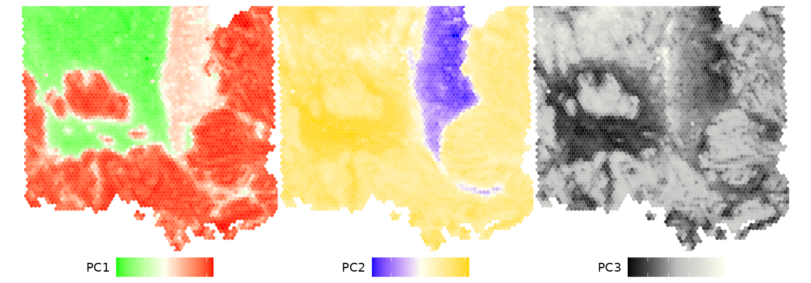
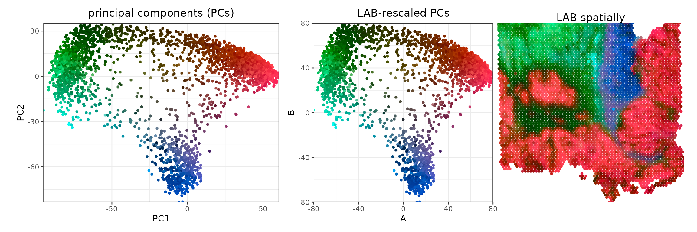
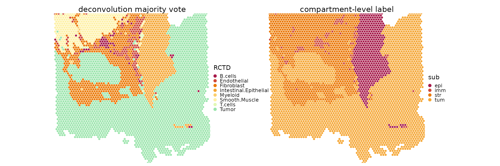
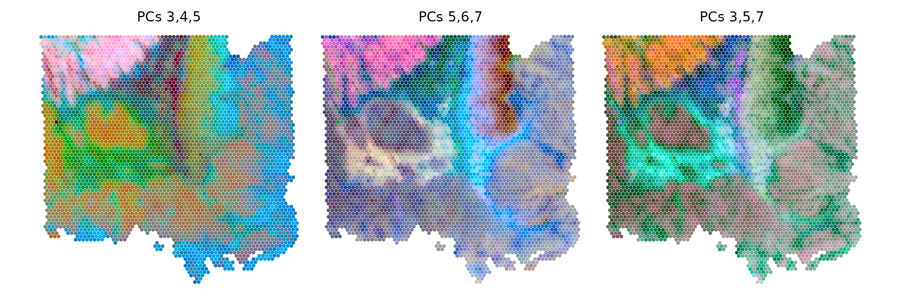
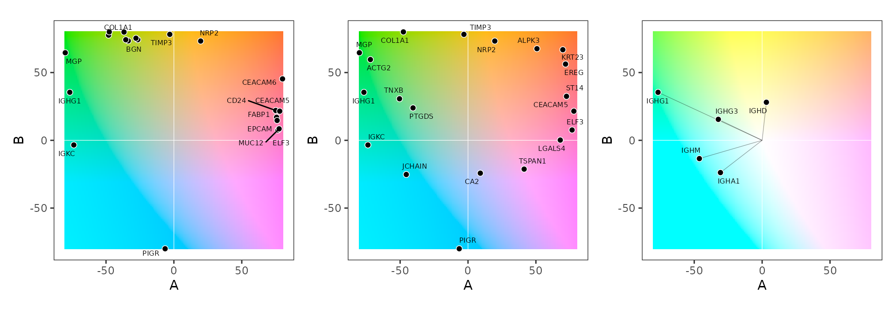
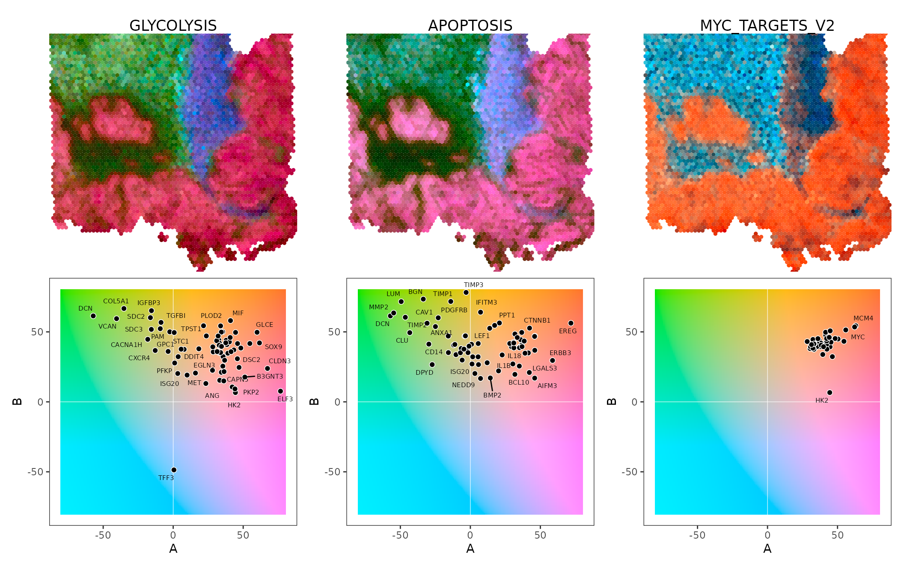
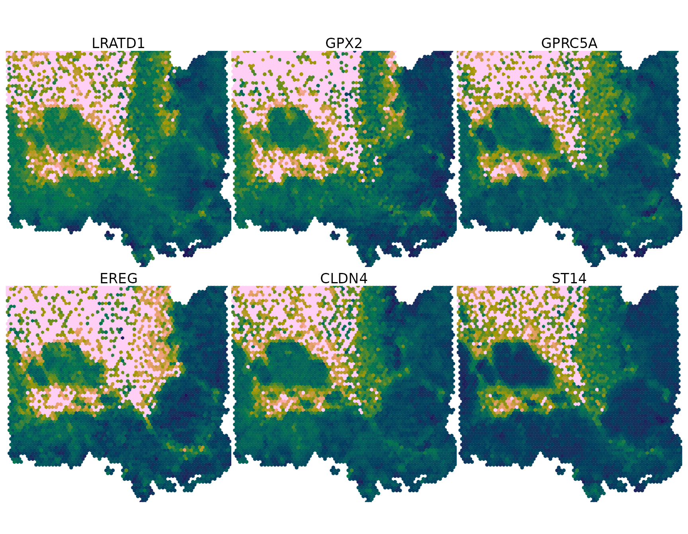
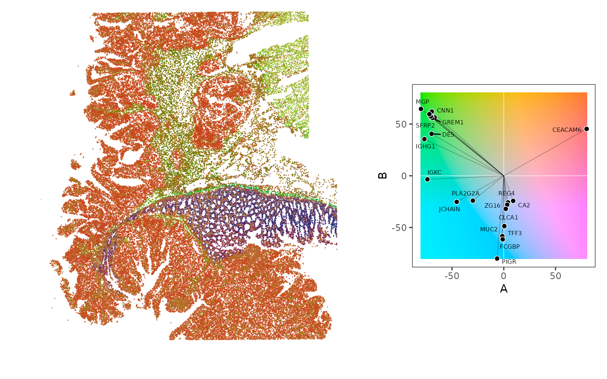

Abstract
Todo.
As a proof of concept, we will process 10x Genomics Visium data comprising a single tissue section from a colorectal cancer biopsy (de Oliveira et al. 2025).
library(miro)
library(ggplot2)
library(msigdbr)
library(scrapper)
library(VisiumIO)
library(patchwork)
library(OSTA.data)
library(HDF5Array)
library(SpatialExperiment)
library(SpatialExperimentIO)
set.seed(260303)
# utilities for spatial visualization
.df <- \(x) {
df <- data.frame(colData(x), spatialCoords(x))
if (length(reducedDims(x))) {
dr <- as.matrix(reducedDim(x))
cn <- setdiff(colnames(dr), names(df))
df <- cbind(df, dr[, cn, drop=FALSE])
}
df
}
.xy <- \(z, i, x="x", y="y", theme="void", ...) {
dots <- list(...)
if (is.null(dots$size)) dots$size <- 1
df <- if (!is.data.frame(z)) .df(z) else z
ok <- length(i) == nrow(df)
if (ok) { df$foo <- i; i <- "foo" }
lg <- if (grepl("#", df[[i]][1]))
scale_color_identity() else
switch(scale_type(df[[i]]),
discrete=scale_color_manual(values=hcl.colors(12, "Spectral")),
continuous=scale_color_gradientn(colors=rev(hcl.colors(9, "Batlow"))))
ggplot(df, aes(.data[[x]], .data[[y]], col=.data[[i]])) +
do.call(geom_point, dots) + lg +
coord_equal(expand=FALSE) +
get(paste0("theme_", theme))() +
theme(
panel.border=element_rect(),
plot.title=element_text(hjust=0.5))
}We’ll start out by retrieving vendor outputs with OSTA.data, reading data into a SpatialExperiment with VisiumIO, and performing minimal processing, namely:
# retrieval
id <- "Visium_HumanColon_Oliveira"
pa <- OSTA.data_load(id)
dir.create(td <- tempfile())
unzip(pa, exdir=td)
# loading
spe <- TENxVisium(
spacerangerOut=file.path(td, "outs"),
images="lowres", format="h5") |>
import() |>
realize()
# wrangling
metadata(spe) <- list()
sym <- rowData(spe)$Symbol
rownames(spe) <- make.unique(sym)
spatialCoordsNames(spe) <- c("x", "y")
img <- as.raster(imgData(spe)$data[[1]])
imgData(spe)$data[[1]] <- SpatialImage(img)Let’s visualize the corresponding hematoxylin and eosin (H&E) staining. On the right-hand side, we crop to the region covered by Visium spots:
mx <- as.raster(getImg(spe))
sf <- imgData(spe)$scaleFactor
xy <- sf*spatialCoords(spe)
xy <- ceiling(colRanges(xy))
i <- seq(xy[2, 1], xy[2, 2])
j <- seq(xy[1, 1], xy[1, 2])
plot(mx[rev(seq_len(nrow(mx))), ])
do.call(rect, as.list(c(xy)))
plot(mx[rev(i), j])
spe <- normalizeRnaCounts.se(spe)
spe <- chooseRnaHvgs.se(spe)
mtx <- logcounts(spe)[rowData(spe)$hvg, ]
# principal component analysis (PCA)
(lem <- reducedDim(spe, "PCA") <- calcPca(mtx))## class: LinearEmbeddingMatrix
## dim: 4269 25
## metadata(0):
## rownames(4269): AACAATGTGCTCCGAG-1 AACACCATTCGCATAC-1 ...
## TGTTGGTGCGGAATCA-1 TGTTGGTGGACTCAGG-1
## colnames(25): PC1 PC2 ... PC24 PC25
## factorData names(0):
# retrieve deconvolution results
# (pre-calculated for runtime reasons)
ws <- readRDS(system.file("extdata", "dec.rds", package="miro"))
# scale weights such that they sum to 1
ws <- sweep(ws, 2, colSums(ws), `/`)
# add proportion estimates as metadata
ws <- data.frame(t(as.matrix(ws)))
colData(spe)[names(ws)] <- ws[colnames(spe), ]
# majority vote assignment
mx <- apply(ws, 1, which.max)
spe$RCTD <- factor(names(ws)[mx])
# compartment-level assignment
lab <- list(
tum="Tumor",
epi="Intestinal.Epithelial",
imm=c("B.cells", "T.cells", "Myeloid"),
str=c("Endothelial", "Fibroblast", "Smooth.Muscle"))
idx <- match(spe$RCTD, unlist(lab))
lab <- rep.int(names(lab), sapply(lab, length))
table(spe$RCTD, spe$sub <- factor(lab[idx]))##
## epi imm str tum
## B.cells 0 52 0 0
## Endothelial 0 0 135 0
## Fibroblast 0 0 649 0
## Intestinal.Epithelial 485 0 0 0
## Myeloid 0 22 0 0
## Smooth.Muscle 0 0 372 0
## T.cells 0 15 0 0
## Tumor 0 0 0 2539Let’s start by visualizing the first three PCs over the tissue. In these data, we can observe that they delineate stroma from healthy and malignant epithelium:
cs <- list(
PC1=c("green", "ivory", "red"),
PC2=c("blue", "ivory", "gold"),
PC3=c("black", "grey", "ivory"))
ps <- lapply(paste0("PC", seq_len(3)), \(.)
.xy(spe, .) + scale_color_gradientn(colors=cs[[.]]))
wrap_plots(ps, nrow=1) & theme(
legend.position="bottom",
legend.text=element_blank())
We can now interpret PCs in terms of colors by rescaling and
interpreting them as coordinates in the CIELAB color space (see
?colorspace::LAB()), where
By default, PCs 1-3 will be used for ABL, but argument
dims (default 3L) can be used to control which
components to use.
## PC1 PC2 PC3
## AACAATGTGCTCCGAG-1 52.100011 5.030579 14.3017620
## AACACCATTCGCATAC-1 -84.096464 -8.074348 17.0534255
## AACACGACAACGGAGT-1 49.857269 5.948549 2.7669452
## AACACGCAGATAACAA-1 -78.961452 6.461693 -0.3578301
## AACACGTTGATACCGC-1 24.267333 5.820805 1.2326999
## AACACTCGTGAGCTTC-1 -1.446398 25.791859 -23.8722523
## L A B hex
## AACAATGTGCTCCGAG-1 55.75023 71.31554 39.32726 #FA3946
## AACACCATTCGCATAC-1 58.09875 -68.42364 21.64746 #00A663
## AACACGACAACGGAGT-1 45.90539 69.01446 40.56569 #D7152D
## AACACGCAGATAACAA-1 43.23843 -63.15506 41.25797 #007B17
## AACACGTTGATACCGC-1 44.59593 42.75889 40.39335 #B44627
## AACACTCGTGAGCTTC-1 23.16911 16.37630 67.33621 #5C2B00
ps <- list(
.xy(spe, "hex", "PC1", "PC2", "bw") +
ggtitle("principal components (PCs)"),
.xy(spe, "hex", "A", "B", "bw") +
ggtitle("LAB-rescaled PCs"),
.xy(spe, "hex") +
ggtitle("LAB spatially"))
wrap_plots(ps, nrow=1) & scale_color_identity()
For comparison, we also visualize deconvolution results spatially:
ps <- list(
.xy(spe, "RCTD") + ggtitle("deconvolution majority vote"),
.xy(spe, "sub") + ggtitle("compartment-level label"))
wrap_plots(ps, nrow=1) &
theme(legend.key.size=unit(0, "lines")) &
guides(col=guide_legend(override.aes=list(alpha=1, size=2)))
We can also represent higher PCs as LAB, and again visualizing over the tissue to start seeing variability within domains; e.g., we can observe some variability within the tumor (left compared to right) and stroma (smooth muscle vs. fibroblasts).
TODO: legend, tho not sure what that should look like.
ds <- list(3:5, 5:7, c(3, 5, 7))
ps <- lapply(ds, \(.) {
lab <- paste("PCs", paste(., collapse=","))
miroSpatial(spe, col=.) + ggtitle(lab)
})
wrap_plots(ps, nrow=1) & theme(plot.title=element_text(hjust=0.5))
We can also visualize feature loadings in a biplot with the LAB color
space as background (note that
remains fixed here). Argument gs may be used to control how
many features to include; a couple options are now supported:
gs or an integer, in
which casehow, where"abs" gets top-features (per absolute values)"uni" samples the color space uniformly"min" gets negatively loaded features"max" gets positively loaded features
ig <- grepv("^IGH", rownames(spe))
miroBiplot(spe, row=10, how="abs") +
miroBiplot(spe, row=20, how="uni") +
miroBiplot(spe, row=ig, L=100, seg=TRUE)
Because loadings are available for all features underlying PCs (i.e., the HVGs selected above), we can also query gene sets, e.g.:
# retrieve hallmark gene sets from 'MSigDB'
db <- msigdbr(species="Homo sapiens", collection="H")
# get list of gene symbols, one element per set
gs <- split(db$gene_symbol, db$gs_name)
names(gs) <- gsub("HALLMARK_", "", names(gs))
head(names(gs), 8)## [1] "ADIPOGENESIS" "ALLOGRAFT_REJECTION"
## [3] "ANDROGEN_RESPONSE" "ANGIOGENESIS"
## [5] "APICAL_JUNCTION" "APICAL_SURFACE"
## [7] "APOPTOSIS" "BILE_ACID_METABOLISM"We can now project observations into the subspace spanned by these.
For this, miroSpatial() supports passing a character vector
of genes to project:
gt <- c("GLYCOLYSIS", "APOPTOSIS", "MYC_TARGETS_V2")
ps <- lapply(gt, \(.) {
map <- calcMap(spe, logcounts(spe), gs[[.]])
hex <- calcHex(map)$hex
list(
.xy(spe, hex) + ggtitle(.),
miroBiplot(spe, row=gs[[.]]))
})
Reduce(c, ps) |>
wrap_plots(nrow=2, byrow=FALSE) &
theme(plot.title=element_text(hjust=0.5))
We can now ask something like “Which genes are driving the red region above?”, which would correspond to positive values for PC1; here, these contain clear smooth muscle cell markers (MYL9, MHY11, CNN1, DES, TAGLN, ACTG2, etc.):
emb <- reducedDim(spe, "PCA")
rot <- featureLoadings(emb)
(gs <- tail(names(sort(rot[, 1])), 14))## [1] "LRATD1" "GPX2" "GPRC5A" "EREG" "CLDN4"
## [6] "ST14" "PHGR1" "CD24" "FABP1" "EPCAM"
## [11] "ELF3" "MUC12" "CEACAM5" "CEACAM6"Let’s check the expression of a few of these:
lapply(head(gs, 6), \(.) {
.xy(spe, logcounts(spe)[., ]) +
ggtitle(.) }) |>
wrap_plots(nrow=2) &
theme(legend.position="none")
We now start seeing a separation of stem-like epithelia (LGR5) towards the left, with mixed borders reflecting bleeding from surrounding stroma (COL3A1, IGFBP5).
We’ll now load up some Xenium data on a disjoint tissue section from the same publication.
# retrieve dataset from OSF
id <- "Xenium_HumanColon_Oliveira"
pa <- OSTA.data_load(id, mol=FALSE)
dir.create(td <- tempfile())
unzip(pa, exdir=td)
# read into 'SpatialExperiment'
xen <- readXeniumSXE(td, addTx=FALSE)
spatialCoordsNames(xen) <- c("x", "y")
xen <- xen[, xen$transcript_counts > 1]
# area-based normalization
sizeFactors(xen) <- (. <- xen$cell_area)/median(.)
(xen <- normalizeRnaCounts.se(xen))## class: SpatialExperiment
## dim: 422 338718
## metadata(3): experiment.xenium cell_boundaries
## nucleus_boundaries
## assays(2): counts logcounts
## rownames(422): ABCC8 ACP5 ... WFDC2 XCL2
## rowData names(3): ID Symbol Type
## colnames(338718): aaaadaba-1 aaaadgga-1 ...
## oikdmkkf-1 oikeebja-1
## colData names(11): cell_id transcript_counts ...
## sample_id sizeFactor
## reducedDimNames(0):
## mainExpName: NULL
## altExpNames(3): NegControlProbe UnassignedCodeword
## NegControlCodeword
## spatialCoords names(2) : x y
## imgData names(1): sample_idWe can now use the Visium-based rotation to compute corresponding PCs. The LAB representation recapitulates the broad tissue structure from before, where red = stroma, blue = healthy, and green = malignant epithelium.
map <- calcMap(spe, logcounts(xen))
hex <- calcHex(map)$hex
# downsample for plotting
idx <- sample(ncol(xen), 1e5)
.xy(xen[, idx], hex[idx], stroke=0, size=1/2)
# top-loaded
emb <- reducedDim(spe)
rot <- featureLoadings(emb)
(top <- apply(rot[, 1:2], 2, \(.) tail(names(sort(abs(.))), 10)))## PC1 PC2
## [1,] "CNN1" "PLA2G2A"
## [2,] "CEACAM6" "CA2"
## [3,] "GREM1" "JCHAIN"
## [4,] "TAGLN" "REG4"
## [5,] "DES" "ZG16"
## [6,] "SFRP2" "CLCA1"
## [7,] "ACTG2" "TFF3"
## [8,] "IGKC" "MUC2"
## [9,] "IGHG1" "FCGBP"
## [10,] "MGP" "PIGR"
# query some interesting genes
row <- unique(as.vector(top))
map <- calcMap(spe, logcounts(xen), row=row)
hex <- calcHex(map)$hex
# downsample for plotting
idx <- sample(ncol(xen), 1e5)
.xy(xen[, idx], hex[idx], stroke=0, size=1/2) +
miroBiplot(spe, row=row, seg=TRUE) +
plot_layout(widths=c(2, 1))
## R version 4.6.0 (2026-04-24)
## Platform: x86_64-pc-linux-gnu
## Running under: Ubuntu 24.04.4 LTS
##
## Matrix products: default
## BLAS: /usr/lib/x86_64-linux-gnu/openblas-pthread/libblas.so.3
## LAPACK: /usr/lib/x86_64-linux-gnu/openblas-pthread/libopenblasp-r0.3.26.so; LAPACK version 3.12.0
##
## locale:
## [1] LC_CTYPE=C.UTF-8 LC_NUMERIC=C
## [3] LC_TIME=C.UTF-8 LC_COLLATE=C.UTF-8
## [5] LC_MONETARY=C.UTF-8 LC_MESSAGES=C.UTF-8
## [7] LC_PAPER=C.UTF-8 LC_NAME=C
## [9] LC_ADDRESS=C LC_TELEPHONE=C
## [11] LC_MEASUREMENT=C.UTF-8 LC_IDENTIFICATION=C
##
## time zone: UTC
## tzcode source: system (glibc)
##
## attached base packages:
## [1] stats4 stats graphics grDevices utils
## [6] datasets methods base
##
## other attached packages:
## [1] SpatialExperimentIO_1.4.0 SpatialExperiment_1.22.0
## [3] HDF5Array_1.40.0 h5mread_1.4.0
## [5] rhdf5_2.56.0 DelayedArray_0.38.1
## [7] SparseArray_1.12.2 S4Arrays_1.12.0
## [9] abind_1.4-8 Matrix_1.7-5
## [11] OSTA.data_1.4.0 patchwork_1.3.2
## [13] VisiumIO_1.8.0 TENxIO_1.14.0
## [15] SingleCellExperiment_1.34.0 SummarizedExperiment_1.42.0
## [17] Biobase_2.72.0 GenomicRanges_1.64.0
## [19] Seqinfo_1.2.0 IRanges_2.46.0
## [21] S4Vectors_0.50.1 BiocGenerics_0.58.1
## [23] generics_0.1.4 MatrixGenerics_1.24.0
## [25] matrixStats_1.5.0 scrapper_1.6.2
## [27] msigdbr_26.1.0 ggplot2_4.0.3
## [29] miro_0.99.0 BiocStyle_2.40.0
##
## loaded via a namespace (and not attached):
## [1] DBI_1.3.0 httr2_1.2.2
## [3] rlang_1.2.0 magrittr_2.0.5
## [5] compiler_4.6.0 RSQLite_3.52.0
## [7] DelayedMatrixStats_1.34.0 systemfonts_1.3.2
## [9] vctrs_0.7.3 httpcode_0.3.0
## [11] pkgconfig_2.0.3 fastmap_1.2.0
## [13] dbplyr_2.5.2 magick_2.9.1
## [15] XVector_0.52.0 labeling_0.4.3
## [17] scuttle_1.22.0 rmarkdown_2.31
## [19] tzdb_0.5.0 ragg_1.5.2
## [21] purrr_1.2.2 bit_4.6.0
## [23] xfun_0.57 cachem_1.1.0
## [25] beachmat_2.28.0 jsonlite_2.0.0
## [27] blob_1.3.0 rhdf5filters_1.24.0
## [29] BiocParallel_1.46.0 Rhdf5lib_2.0.0
## [31] parallel_4.6.0 R6_2.6.1
## [33] bslib_0.11.0 stringi_1.8.7
## [35] RColorBrewer_1.1-3 limma_3.68.2
## [37] jquerylib_0.1.4 Rcpp_1.1.1-1.1
## [39] assertthat_0.2.1 knitr_1.51
## [41] triebeard_0.4.1 R.utils_2.13.0
## [43] readr_2.2.0 BiocBaseUtils_1.14.0
## [45] tidyselect_1.2.1 yaml_2.3.12
## [47] codetools_0.2-20 curl_7.1.0
## [49] lattice_0.22-9 tibble_3.3.1
## [51] withr_3.0.2 S7_0.2.2
## [53] evaluate_1.0.5 desc_1.4.3
## [55] BiocFileCache_3.2.0 pillar_1.11.1
## [57] BiocManager_1.30.27 filelock_1.0.3
## [59] hms_1.1.4 sparseMatrixStats_1.24.0
## [61] scales_1.4.0 glue_1.8.1
## [63] tools_4.6.0 BiocIO_1.22.0
## [65] data.table_1.18.4 BiocNeighbors_2.6.0
## [67] locfit_1.5-9.12 babelgene_22.9
## [69] fs_2.1.0 grid_4.6.0
## [71] urltools_1.7.3.1 edgeR_4.10.0
## [73] DropletUtils_1.32.0 colorspace_2.1-2
## [75] cli_3.6.6 rappdirs_0.3.4
## [77] textshaping_1.0.5 arrow_24.0.0
## [79] dplyr_1.2.1 gtable_0.3.6
## [81] R.methodsS3_1.8.2 sass_0.4.10
## [83] digest_0.6.39 ggrepel_0.9.8
## [85] dqrng_0.4.1 crul_1.6.0
## [87] osfr_0.2.9 rjson_0.2.23
## [89] farver_2.1.2 R.oo_1.27.1
## [91] memoise_2.0.1 htmltools_0.5.9
## [93] pkgdown_2.2.0 lifecycle_1.0.5
## [95] httr_1.4.8 statmod_1.5.1
## [97] bit64_4.8.0